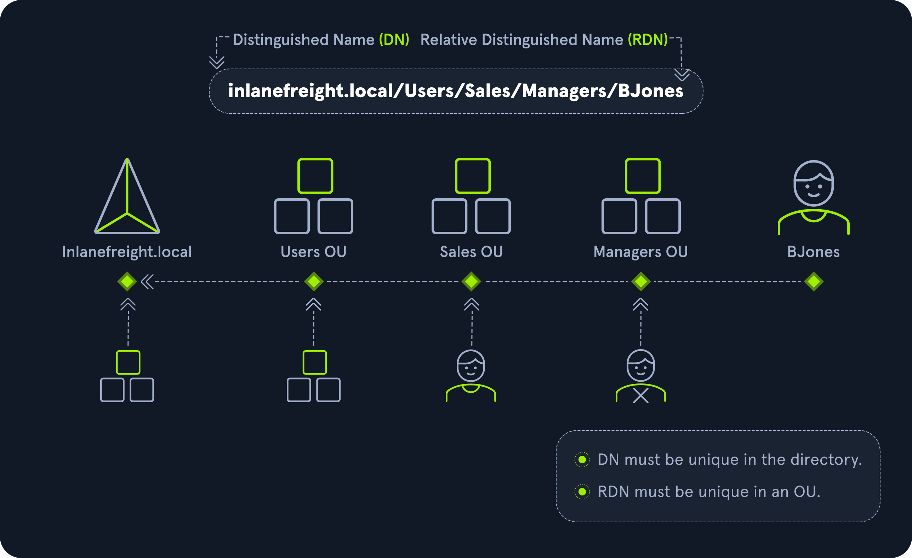

Reference: HTB
Object
An object can be defined as ANY resource present within an Active Directory environment such as OUs, printers, users, domain controllers, etc.
Attributes
Every object in Active Directory has an associated set of attributes used to define characteristics of the given object. A computer object contains attributes such as the hostname and DNS name. All attributes in AD have an associated LDAP name that can be used when performing LDAP queries, such as displayName for Full Name and given name for First Name.
Schema
The Active Directory schema is essentially the blueprint of any enterprise environment. It defines what types of objects can exist in the AD database and their associated attributes. It lists definitions corresponding to AD objects and holds information about each object. For example, users in AD belong to the class “user,” and computer objects to “computer,” and so on. Each object has its own information (some required to be set and others optional) that are stored in Attributes. When an object is created from a class, this is called instantiation, and an object created from a specific class is called an instance of that class. For example, if we take the computer RDS01. This computer object is an instance of the “computer” class in Active Directory.
Domain
A domain is a logical group of objects such as computers, users, OUs, groups, etc. We can think of each domain as a different city within a state or country. Domains can operate entirely independently of one another or be connected via trust relationships.
Forest
A forest is a collection of Active Directory domains. It is the topmost container and contains all of the AD objects introduced below, including but not limited to domains, users, groups, computers, and Group Policy objects. A forest can contain one or multiple domains and be thought of as a state in the US or a country within the EU. Each forest operates independently but may have various trust relationships with other forests.
Tree
A tree is a collection of Active Directory domains that begins at a single root domain. A forest is a collection of AD trees. Each domain in a tree shares a boundary with the other domains. A parent-child trust relationship is formed when a domain is added under another domain in a tree. Two trees in the same forest cannot share a name (namespace). Let’s say we have two trees in an AD forest: inlanefreight.local and ilfreight.local. A child domain of the first would be corp.inlanefreight.local while a child domain of the second could be corp.ilfreight.local. All domains in a tree share a standard Global Catalog which contains all information about objects that belong to the tree.
Container
Container objects hold other objects and have a defined place in the directory subtree hierarchy.
Leaf
Leaf objects do not contain other objects and are found at the end of the subtree hierarchy.
Global Unique Identifier (GUID)
A GUID is a unique 128-bit value assigned when a domain user or group is created. This GUID value is unique across the enterprise, similar to a MAC address. Every single object created by Active Directory is assigned a GUID, not only user and group objects. The GUID is stored in the ObjectGUID attribute. When querying for an AD object (such as a user, group, computer, domain, domain controller, etc.), we can query for its objectGUID value using PowerShell or search for it by specifying its distinguished name, GUID, SID, or SAM account name. GUIDs are used by AD to identify objects internally. Searching in Active Directory by GUID value is probably the most accurate and reliable way to find the exact object you are looking for, especially if the global catalog may contain similar matches for an object name. Specifying the ObjectGUID value when performing AD enumeration will ensure that we get the most accurate results pertaining to the object we are searching for information about. The ObjectGUID property never changes and is associated with the object for as long as that object exists in the domain.
Security principals
Security principals are anything that the operating system can authenticate, including users, computer accounts, or even threads/processes that run in the context of a user or computer account (i.e., an application such as Tomcat running in the context of a service account within the domain). In AD, security principles are domain objects that can manage access to other resources within the domain. We can also have local user accounts and security groups used to control access to resources on only that specific computer. These are not managed by AD but rather by the Security Accounts Manager (SAM).
Security Identifier (SID)
A security identifier, or SID is used as a unique identifier for a security principal or security group. Every account, group, or process has its own unique SID, which, in an AD environment, is issued by the domain controller and stored in a secure database. A SID can only be used once. Even if the security principle is deleted, it can never be used again in that environment to identify another user or group. When a user logs in, the system creates an access token for them which contains the user’s SID, the rights they have been granted, and the SIDs for any groups that the user is a member of. This token is used to check rights whenever the user performs an action on the computer. There are also well-known SIDs that are used to identify generic users and groups. These are the same across all operating systems. An example is the Everyone group.
Distinguished Name (DN)
A Distinguished Name (DN) describes the full path to an object in AD (such as cn=bjones, ou=IT, ou=Employees, dc=inlanefreight, dc=local). In this example, the user bjones works in the IT department of the company Inlanefreight, and his account is created in an Organizational Unit (OU) that holds accounts for company employees. The Common Name (CN) bjones is just one way the user object could be searched for or accessed within the domain.
Relative Distinguished Name (RDN)
A Relative Distinguished Name (RDN) is a single component of the Distinguished Name that identifies the object as unique from other objects at the current level in the naming hierarchy. In our example, bjones is the Relative Distinguished Name of the object. AD does not allow two objects with the same name under the same parent container, but there can be two objects with the same RDNs that are still unique in the domain because they have different DNs. For example, the object cn=bjones,dc=dev,dc=inlanefreight,dc=local would be recognized as different from cn=bjones,dc=inlanefreight,dc=local.

sAMAccountName
The sAMAccountName is the user’s logon name. Here it would just be bjones. It must be a unique value and 20 or fewer characters.
userPrincipalName
The userPrincipalName attribute is another way to identify users in AD. This attribute consists of a prefix (the user account name) and a suffix (the domain name) in the format of bjones@inlanefreight.local. This attribute is not mandatory.
FSMO Roles
Various FSMO roles are discussed in detail in AD Functionality chapter.
In the early days of AD, if you had multiple Domain Controllers (DC) in an environment, they would fight over which DC gets to make changes, and sometimes changes would not be made properly. Microsoft then implemented “last writer wins,” which could introduce its own problems if the last change breaks things. They then introduced a model in which a single “master” DC could apply changes to the domain while the others merely fulfilled authentication requests. This was a flawed design because if the master DC went down, no changes could be made to the environment until it was restored. To resolve this single point of failure model, Microsoft separated the various responsibilities that a DC can have into Flexible Single Master Operation (FSMO) roles. These give Domain Controllers (DC) the ability to continue authenticating users and granting permissions without interruption (authorization and authentication). There are five FSMO roles: Schema Master and Domain Naming Master (one of each per forest), Relative ID (RID) Master (one per domain), Primary Domain Controller (PDC) Emulator (one per domain), and Infrastructure Master (one per domain). All five roles are assigned to the first DC in the forest root domain in a new AD forest. Each time a new domain is added to a forest, only the RID Master, PDC Emulator, and Infrastructure Master roles are assigned to the new domain. FSMO roles are typically set when domain controllers are created, but sysadmins can transfer these roles if needed. These roles help replication in AD to run smoothly and ensure that critical services are operating correctly. We will walk through each of these roles in detail later in this section.
Global Catalog
A global catalog (GC) is a domain controller that stores copies of ALL objects in an Active Directory forest. The GC stores a full copy of all objects in the current domain and a partial copy of objects that belong to other domains in the forest. Standard domain controllers hold a complete replica of objects belonging to its domain but not those of different domains in the forest. The GC allows both users and applications to find information about any objects in ANY domain in the forest. GC is a feature that is enabled on a domain controller and performs the following functions:
- Authentication (provided authorization for all groups that a user account belongs to, which is included when an access token is generated)
- Object search (making the directory structure within a forest transparent, allowing a search to be carried out across all domains in a forest by providing just one attribute about an object.)
Read-Only Domain Controller (RODC)
A Read-Only Domain Controller (RODC) has a read-only Active Directory database. No AD account passwords are cached on an RODC (other than the RODC computer account & RODC KRBTGT passwords.) No changes are pushed out via an RODC’s AD database, SYSVOL, or DNS. RODCs also include a read-only DNS server, allow for administrator role separation, reduce replication traffic in the environment, and prevent SYSVOL modifications from being replicated to other DCs.
Replication
Replication happens in AD when AD objects are updated and transferred from one Domain Controller to another. Whenever a DC is added, connection objects are created to manage replication between them. These connections are made by the Knowledge Consistency Checker (KCC) service, which is present on all DCs. Replication ensures that changes are synchronized with all other DCs in a forest, helping to create a backup in case one domain controller fails.
Service Principal Name (SPN)
A Service Principal Name (SPN) uniquely identifies a service instance. They are used by Kerberos authentication to associate an instance of a service with a logon account, allowing a client application to request the service to authenticate an account without needing to know the account name.
Group Policy Object (GPO)
Group Policy Objects (GPOs) are virtual collections of policy settings. Each GPO has a unique Global Unique Identifier (GUID). A GPO can contain local file system settings or Active Directory settings. GPO settings can be applied to both user and computer objects. They can be applied to all users and computers within the domain or defined more granularly at the OU level.
Access Control List (ACL)
An Access Control List (ACL) is the ordered collection of Access Control Entries (ACEs) that apply to an object.
Access Control Entries (ACEs)
Each Access Control Entry (ACE) in an ACL identifies a trustee (user account, group account, or logon session) and lists the access rights that are allowed, denied, or audited for the given trustee.
Discretionary Access Control List (DACL)
DACLs define which security principles are granted or denied access to an object; it contains a list of ACEs. When a process tries to access a securable object, the system checks the ACEs in the object’s DACL to determine whether or not to grant access. If an object does NOT have a DACL, then the system will grant full access to everyone, but if the DACL has no ACE entries, the system will deny all access attempts. ACEs in the DACL are checked in sequence until a match is found that allows the requested rights or until access is denied.
System Access Control Lists (SACL)
Allows for administrators to log access attempts that are made to secured objects. ACEs specify the types of access attempts that cause the system to generate a record in the security event log.
Fully Qualified Domain Name (FQDN)
An FQDN is the complete name for a specific computer or host. It is written with the hostname and domain name in the format [host name].[domain name].[tld]. This is used to specify an object’s location in the tree hierarchy of DNS. The FQDN can be used to locate hosts in an Active Directory without knowing the IP address, much like when browsing to a website such as google.com instead of typing in the associated IP address. An example would be the host DC01 in the domain INLANEFREIGHT.LOCAL. The FQDN here would be DC01.INLANEFREIGHT.LOCAL.
Tombstone
A tombstone is a container object in AD that holds deleted AD objects. When an object is deleted from AD, the object remains for a set period of time known as the Tombstone Lifetime, and the isDeleted attribute is set to TRUE. Once an object exceeds the Tombstone Lifetime, it will be entirely removed. Microsoft recommends a tombstone lifetime of 180 days to increase the usefulness of backups, but this value may differ across environments. Depending on the DC operating system version, this value will default to 60 or 180 days. If an object is deleted in a domain that does not have an AD Recycle Bin, it will become a tombstone object. When this happens, the object is stripped of most of its attributes and placed in the Deleted Objects container for the duration of the tombstoneLifetime. It can be recovered, but any attributes that were lost can no longer be recovered.
AD Recycle Bin
The AD Recycle Bin was first introduced in Windows Server 2008 R2 to facilitate the recovery of deleted AD objects. This made it easier for sysadmins to restore objects, avoiding the need to restore from backups, restarting Active Directory Domain Services (AD DS), or rebooting a Domain Controller. When the AD Recycle Bin is enabled, any deleted objects are preserved for a period of time, facilitating restoration if needed. Sysadmins can set how long an object remains in a deleted, recoverable state. If this is not specified, the object will be restorable for a default value of 60 days. The biggest advantage of using the AD Recycle Bin is that most of a deleted object’s attributes are preserved, which makes it far easier to fully restore a deleted object to its previous state.
SYSVOL
The SYSVOL folder, or share, stores copies of public files in the domain such as system policies, Group Policy settings, logon/logoff scripts, and often contains other types of scripts that are executed to perform various tasks in the AD environment. The contents of the SYSVOL folder are replicated to all DCs within the environment using File Replication Services (FRS). You can read more about the SYSVOL structure here.
AdminSDHolder
The AdminSDHolder object is used to manage Access Control List (ACL) for members of built-in groups in AD marked as privileged. It acts as a container that holds the Security Descriptor applied to members of protected groups. The SDProp (SD Propagator) process runs on a schedule on the PDC Emulator Domain Controller. When this process runs, it checks members of protected groups to ensure that the correct ACL is applied to them. It runs every hour by default. For example, suppose an attacker is able to create a malicious ACL entry to grant a user certain rights over a member of the Domain Admins group. In that case, unless they modify other settings in AD, these rights will be removed (and they will lose any persistence they were hoping to achieve) when the SDProp process runs on the set interval.
dsHeuristics
The dsHeuristics attribute is a string value set on the Directory Service object used to define multiple forest-wide configuration settings. One of these settings is to exclude built-in groups from the Protected Groups list. Groups in this list are protected from modification via the AdminSDHolder object. If a group is excluded via the dsHeuristics attribute, then any changes that affect it will not be reverted when the SDProp process runs.
adminCount
The adminCount attribute determines whether or not the SDProp process protects a user. If the value is set to 0 or not specified, the user is not protected. If the attribute value is set to 1, the user is protected. Attackers will often look for accounts with the adminCount attribute set to 1 to target in an internal environment. These are often privileged accounts and may lead to further access or full domain compromise.
Active Directory Users and Computers (ADUC)
ADUC is a GUI console commonly used for managing users, groups, computers, and contacts in AD. Changes made in ADUC can be done via PowerShell as well.
ADSI Edit
ADSI Edit is a GUI tool used to manage objects in AD. It provides access to far more than is available in ADUC and can be used to set or delete any attribute available on an object, add, remove, and move objects as well. It is a powerful tool that allows a user to access AD at a much deeper level. Great care should be taken when using this tool, as changes here could cause major problems in AD.
sIDHistory
This attribute holds any SIDs that an object was assigned previously. It is usually used in migrations so a user can maintain the same level of access when migrated from one domain to another. This attribute can potentially be abused if set insecurely, allowing an attacker to gain prior elevated access that an account had before a migration if SID Filtering (or removing SIDs from another domain from a user’s access token that could be used for elevated access) is not enabled.
NTDS.DIT
The NTDS.DIT file can be considered the heart of Active Directory. It is stored on a Domain Controller at C:\Windows\NTDS\ and is a database that stores AD data such as information about user and group objects, group membership, and, most important to attackers and penetration testers, the password hashes for all users in the domain. Once full domain compromise is reached, an attacker can retrieve this file, extract the hashes, and either use them to perform a pass-the-hash attack or crack them offline using a tool such as Hashcat to access additional resources in the domain. If the setting Store password with reversible encryption is enabled, then the NTDS.DIT will also store the cleartext passwords for all users created or who changed their password after this policy was set. While rare, some organizations may enable this setting if they use applications or protocols that need to use a user’s existing password (and not Kerberos) for authentication.
MSBROWSE
MSBROWSE is a Microsoft networking protocol that was used in early versions of Windows-based local area networks (LANs) to provide browsing services. It was used to maintain a list of resources, such as shared printers and files, that were available on the network, and to allow users to easily browse and access these resources.
In older version of Windows we could use nbtstat -A ip-address to search for the Master Browser. If we see MSBROWSE it means that’s the Master Browser. Aditionally we could use nltest utility to query a Windows Master Browser for the names of the Domain Controllers.
Today, MSBROWSE is largely obsolete and is no longer in widespread use. Modern Windows-based LANs use the Server Message Block (SMB) protocol for file and printer sharing, and the Common Internet File System (CIFS) protocol for browsing services.